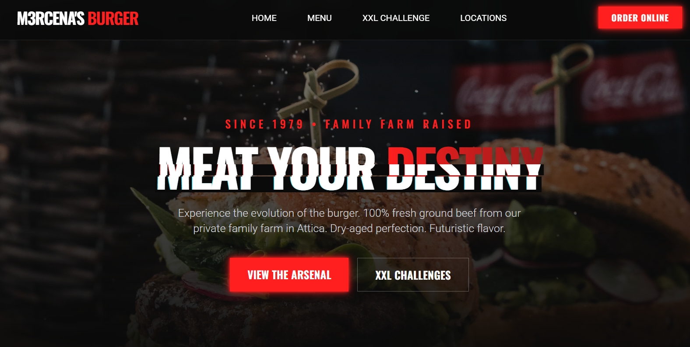

Hi, my name is |
I'm a Full-Stack Software Engineer and Computer Science Student at NKUA. I engineer high-performance web applications, cross-platform desktop software, and data-dense dashboards—bridging low-level systems logic with clean, modern interfaces.
I focus on end-to-end software delivery: from architecting resilient backends and managing database state to designing responsive, information-dense user interfaces.
My academic foundation at the Department of Informatics & Telecommunications (NKUA) spans low-level systems programming in C/C++, assembly, and digital logic design on FPGAs. This dual exposure to low-level hardware constraints and modern web stacks allows me to write performant, predictable software across any layer.
Cross-platform desktop application revitalizing offline course and asset management. Built with Electron, TypeScript, and React, featuring resilient IPC communication, multi-threaded download stream queues, local caching, and automated multi-OS release builds using GitHub Actions.

Redefining the fast-food aesthetic, I designed a Cyber-Industrial landing page for M3rcena's Burger that merges raw culinary grit with a futuristic interface. Built using Tailwind CSS, the site features a high-contrast dark mode, custom glitch animations, and a seamless, scrollbar-free user experience.
Architectural layers, runtime systems, and toolchains I work across daily.
Published packages, native utilities, and public systems code.
$ npm i @m3rcena/weky
Modular, type-safe gaming engine built for Discord.js bots. Provides zero-dependency interactive canvas and button components, structured state machines, and complete event handlers.
release: cross-platform-v3.x
Maintained cross-platform desktop application orchestrating concurrent asset downloads, local caching strategies, and persistent state across multi-OS environments.
Formal academic grounding, core coursework, and professional certifications.
Rigorous computer science curriculum emphasizing foundational computer architecture, memory-safe data structures, discrete mathematics, and systems-level engineering.
Comprehensive hands-on training spanning network architecture, system administration, client-server security protocols, routing tables, and Linux environments.
Exploration of quantum mechanical principles applied to computing. Implemented state superposition, quantum gates, entanglement circuits, and foundational machine learning algorithms.